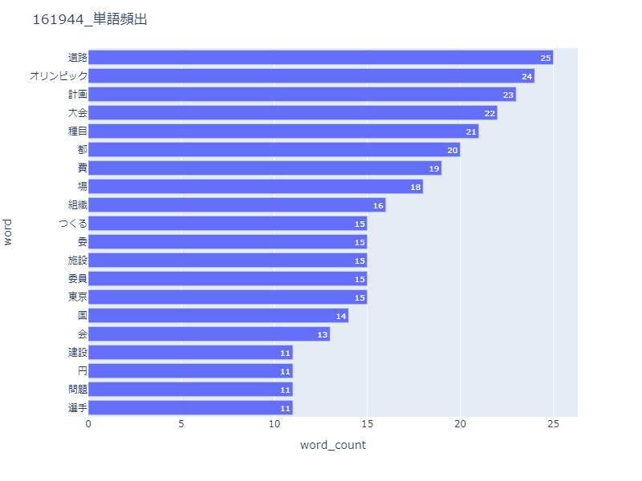
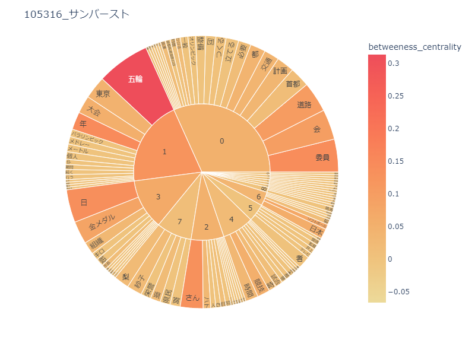
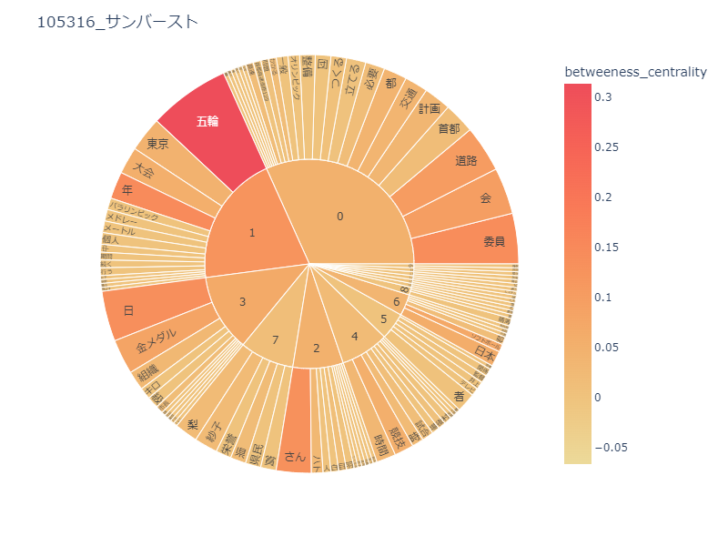
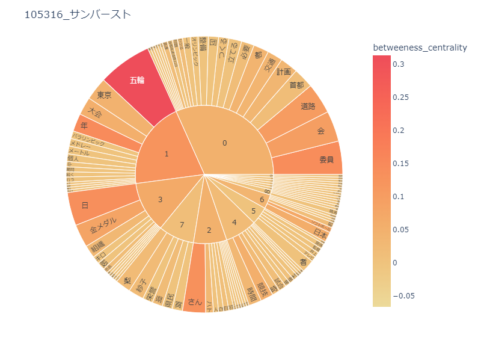

比較・分析
1964年の東京オリンピック



2020年の東京オリンピック

 
比較
1964年は「道路」や「計画」、「費」「場」など施設関係の言葉が多いと感じた。
計画を立てている段階での話題が多かったのではないか。
2020年は「日」「年」「東京」などがあり、コロナの関係で開催が難しかったので、その話題が多かったのではないかと考える。
また、1964年は「オリンピック」と書かれているが、2020年は「五輪」と表記されていた。
比較・分析
